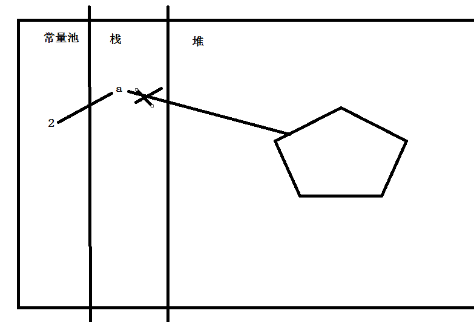

js-正则
时间： 17/02/02
js代码优化（提高效率）的方案（扩展）（重）
1、将重复使用的dom元素用变量存储
2、for循环中用变量存储数组或集合的length
笔试题
function fn() {
console.log(a); //function a(){}
var a = 2;
function a() {}
console.log(a); //2
var a;
function a(){}
console.log(a);
a = 2;
console.log(a);
}
fn();
输出什么？

思考
实现用户名的验证
用户名规则：数字、字母、下划线，不可以以数字开头，长度为6-16位
var username = "abc";
var reg = /^[a-zA-Z_]\w{5,15}$/;
什么是正则？
0、一种高效处理字符串的规则，又称规则表达式
1、正则表达式(regular expression)描述了一种字符串匹配的模式
2、正则表达式是由普通字符（例如字符 a 到 z）以及特殊字符（称为"元字符"）组成
3、正则表达式是对字符串操作的一种逻辑公式，就是用事先定义好的一些特定字符、及这些特定字符的组合，组成一个“规则字符串”，这个“规则字符串”用来表达对字符串的一种过滤逻辑（匹配）
为什么要使用正则？
1、普通表单验证方法太复杂，效率低下
2、正则写法简单，灵活，效率高，使用非常方便
正则可以做什么？
1、正则表通常被用来查找、替换字符串
2、从字符串中提取出想要的信息
创建正则表达式（重）
1、字面量形式（常用）
/表达式/ 第一个 / 表示正则开始,第二个 / 表示正则结束
demo：
判断字符串中是否含有字母a的正则表达式
var reg = /a/;
此种方法不可以进行字符串拼接
2、构造函数（使用new）（封装时使用）（一般不知道具体要匹配什么）
var reg = new RegExp(表达式,[参数]);
[参数]指的是
g 是否全部匹配
i 是否忽略大小写
demo:
判断字符串中是否含有字符串abc
var reg = new RegExp('abc','i');
正则测试方法（重）
正则.test(字符串); 字符串符合规则返回true，否则返回false
demo:
判断字符串中是否含有c
var reg = /c/;
reg.test('abcd'); // true
reg.test('123ab'); // false
元字符
正则中使用表示特定含义的字符
比如：^ 表示从字符串的第一个字符开始匹配
问题
var str = 'abcde';
1、怎么判断一个字符串是不是以a开头？
2、怎么判断一个字符串是不是以e结尾？
^ 和 $(重)
var str = 'abc123';
1、^ 开始标记
/^a/ 表示判断字符串是不是以a开始
2、$ 结束标记
/3$/ 表示判断字符串是不是以3结尾
问题
var str = 'abcde12345';
1、怎么判断一个字符串是不是包含字母？
2、怎么判断一个字符串是不是包含数字？
[]配集合(重)
[]代表匹配一个字符 字符集合。匹配所包含的任意一个字符。
例如，[abc]可以匹配“plain”中的“a”。
var str = 'abcde12345';
1、怎么判断一个字符串是不是包含字母？
var reg = /[abcdef....zABC...Z]/; => var reg = /[a-zA-Z]/;
2、怎么判断一个字符串是不是包含数字？
var reg = /[0123456789]/;
=> var reg = /[0-9]/;
=> var reg = /\d/;
问题
var str = 'abcde12345';
1、怎么判断一个字符串开头五个字符是不是都是字母？
2、怎么判断一个字符串最后五个字符是不是都是数字？
{}、+、*、？（重）
1、{n} n是一个非负整数。匹配确定的n次。
例如，“o{2}”不能匹配“Bob”中的“o”，但是能匹配“food”中的两个o。
{n,} n是一个非负整数。至少匹配n次。
{n,m} m和n均为非负整数，其中n<=m。最少匹配n次且最多匹配m次。
2、+ 匹配前面的子表达式一次或多次(大于等于1次）。
例如，“zo+”能匹配“zo”以及“zozoo”，但不能匹配“z”。
+等价于{1,}。
3、* 匹配前面的子表达式任意次。
例如，zo*能匹配“z”，也能匹配“zo”以及“zoo”。
* 等价于 {0,}
4、？ 匹配前面的子表达式零次或一次。
例如，“dos?”可以匹配“do”或“does”中的“do”。
?等价于{0,1}。
趁热打铁
1、判断一个数是不是重叠数（6、66、666...）
var reg = /^6+$/;
2、判断一个字符串是不是包含ab或者abc
3、判断密码是不是在6-20位之间
4、判断用户名
字母数字下划线的组合
不能以数字开头
\w (数字字母下划线)（重）
\w 匹配数字字母下划线的组合
如：判断用户名为数字字母下划线
var reg = /^[a-zA-Z0-9_]+$/;
var reg = /^\w+$/;
. 任意字符
点. 匹配除“\r\n”之外的任何单个字符。
注意：如果想匹配有没有点（.），需要进行转义 \.
趁热打铁
\b 单词边界符
\b 匹配一个单词边界，也就是指单词和空格间的位置
my name is pine
例如，“er\b”可以匹配“never haha”中的“er”，但不能匹配“verb”中的“er”。
I am a teacher
container item item-title
\s 空格
\s 匹配一个空格
demo:
var reg = /item\s/;
reg.test('item item1')// true
reg.test('item1'); // false
实战
| 或模式匹配
| 将两个匹配条件进行逻辑“或”（Or）运算。
例如正则表达式 var reg = /(him)|(her)/;
匹配"it belongs to him"和"it belongs to her"，
但是不能匹配"it belongs to them."
var reg= /google|baidu|bing/; //匹配三种其中一种字符串
var str = 'www.google.com';
reg.test(str); //true
建议：使用 | 前后的内容加（），以免不必要的bug
g 全部匹配
g 匹配整个字符串（所有符合规则的字符串都匹配）
global
var str = '我很困，你们更困！';
console.log( str.replace('困','精神') );
var reg = /困/g;
console.log( str.replace(reg,'精神') ); //'我很精神，你们更精神！'
console.log( str.replace(reg,'不困') );
i 忽略大小写
i 忽略字母的大小写
ignorecase
var v = 'Abc6'; //abc6 ABC6 Abc6
/ab/i 能匹配 Ab ab AB aB
var verify = '0Ab5'; //0ab5 0Ab5
reg = /^0ab5$/i;
console.log( reg.test(verify) );
实战
综合练习
检查邮政编码//共 6 位数字，第一位不能为 0
var reg = /^[1-9]\d{5}$/;
检查文件压缩包 // xxx.zip xxx.gz xxx.rar
var reg = /^\w+\.(zip|gz|rar)$/;
电子邮件( xxxxx @ xxxx(.xxxx)+) xxx@xx.com.cn
常用正则实战
1、用户名验证 （由数字、字母、下划线组成，不能以数字开头，长度为6-16位）
var reg = /^[a-zA-Z_]\w{5,15}$/;
2、手机号验证 （11位数字，以13|18|15|17开头）
var reg = /^(13|15|17|18)\d{9}$/;
3、日期检测 （格式为 xxxx-xx-xx 或者 xxxx/xx/xx） xxxx-xx/xx
var reg = /^((\d{4}-\d{2}-\d{2})|(\d{4}/\d{2}/\d{2}))$/;
4、身份证验证 （身份证号码为15位或者18位，15位时全为数字，18位前17位为数字，最后一位是校验位，可能为数字或字符X）
var reg = /^\d{15}(\d{2}[\dX])?$/;
5、中文验证 （中文汉字范围 [\u4e00-\u9fff]）
var reg = /^[\u4e00-\u9fff]+$/; //全部是汉字
var reg = /[\u4e00-\u9fff]/; // 判断有没有汉字
脚本工具网站
正则高级
1、() 分组模式匹配
正则中使用()括起来的部分称之为一组正则
常用于匹配一组字符或提取内容
2、\1 \2 ... \n
\1代表正则第一个括号匹配时的内容
\2代表正则中第二个括号的内容
如实现不重叠数字正则：
var reg = /^(\d)\1+$/;
3、$1 $2 ... $n
字符串替换时用于表示第几个括号的内容
正则替换（重）
str.replace(reg,替换内容)
replace 使用正则替换
str.replace(正则表达式,替换结果)
var reg = /wenhao/;
var str = 'Good job ,Wenhao! Come on , wenhao! wenhao,wenhao!'; str.replace(reg,'liwenhao');
i 忽略大小写
var reg = /wenhao/i;
g 全部匹配，替换所有的wenhao
var reg = /wenhao/g;
正则查找
str.search(正则表达式)
search 使用正则查找
var pattern = /good/ig;
var str = 'good good study!，day day up!'; alert(str.search(pattern)); //找到返回下标，否则返回-1
indexOf不可以使用正则
正则提取
reg.exec(字符串); 根据正则提取字符串中的内容
exec() 方法用于检索字符串中的正则表达式的匹配。
返回一个数组，其中存放匹配的结果。如果未找到匹配，则返回值为 null。
str.match(reg)
预习
1、严格模式
2、let/const
3、ES6 变量结构赋值
4、ES6 字符串新增方法
5、=> 函数 （箭头函数）
6、Set 和 Map 结构